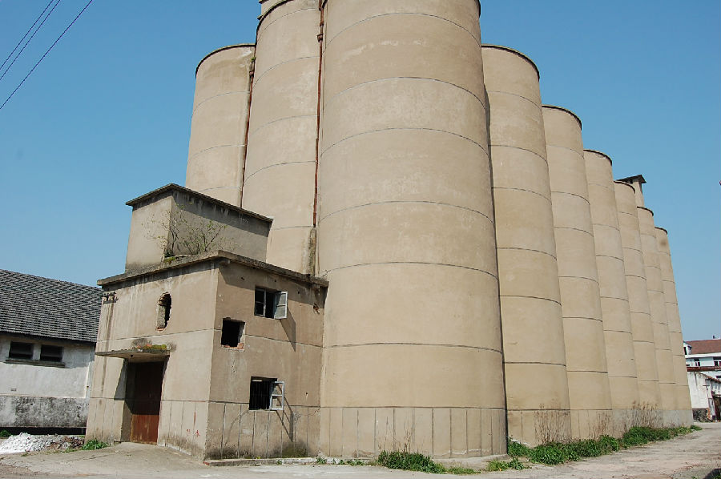

嘉兴市文物保护网 · 市级文物保护点 · 2020-11-09 · 原文

塘北粮仓群位于嘉兴南湖区新丰镇丰北社区禾丰西街126号，南10米处为平湖塘，原隶属于嘉兴市粮食局，是浙江省粮食储备库，现承包给私人。现存1959年建的悬山顶粮仓3座以及20世纪70年代建的圆筒形粮仓1座，总占地面积29700平方米。3座悬山顶粮仓中，西北1座共21开间，面阔73.5米，进深20.43米；东北一座共8开间，通面阔51.46米，通进深15.62米；西南一座共24开间，通面阔84米，通进深21米。3座粮仓内均为人字型梁，正梁上都有一根粮食输送管道，屋顶铺设洋瓦，墙体用青砖砌筑。圆筒形粮仓由三排共21个高达20米左右的圆筒相接而成，内部情况因无法进入暂不了解。粮仓群保存较完整，圆筒粮仓形制巨大、构造特别，有较高的历史和科学价值。2009年公布为嘉兴市文物保护点。